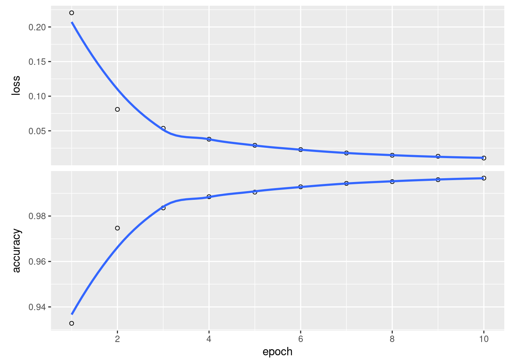
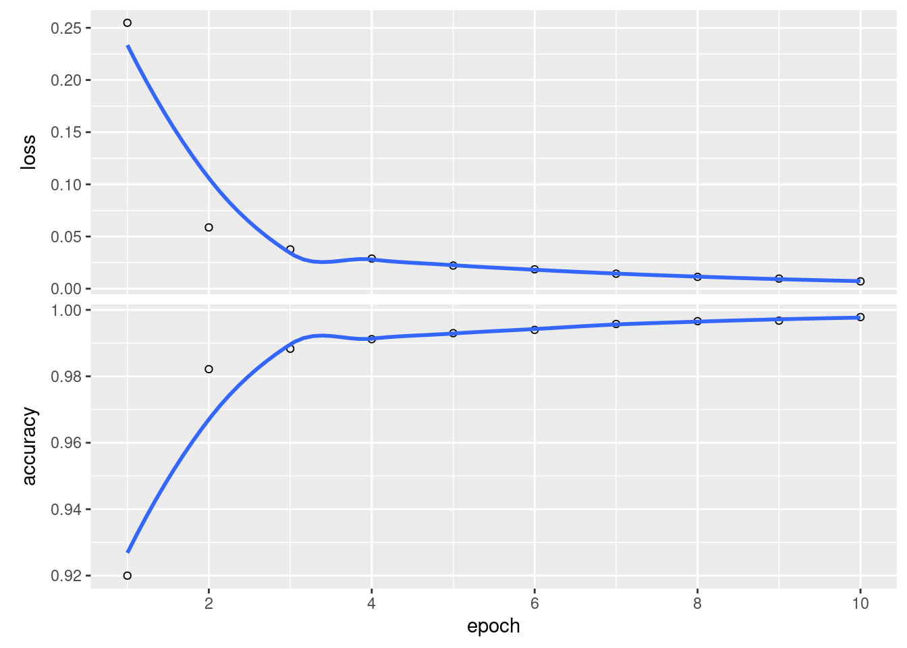

Chapter 3 Convolutional Neural Networks
We will start with…
3.1 3.1 Image Classifications with MLP
3.1.1 3.1.1 Input Layer
Let’s start by building a model that will begin by flattening a 28x28 image matrix into a vector.
Great, now let’s add some hidden layers.
3.1.3 3.1.3 Output Layer
Now we need to add an output layer using softmax for the numbers 1-10.
To see the whole model together - and what it produces
#sequential model
model <- keras_model_sequential() %>%
#flatten the input
layer_flatten(input_shape = c(28,28)) %>%
#two hidden layers
layer_dense(units = 512, activation = "relu") %>%
layer_dense(units = 512, activation = "relu")%>%
#the output layer
layer_dense(units = 10, activation = "softmax")
summary(model)## Model: "sequential_9"
## ______________________________________________________________________________________________
## Layer (type) Output Shape Param #
## ==============================================================================================
## flatten_7 (Flatten) (None, 784) 0
## ______________________________________________________________________________________________
## dense_23 (Dense) (None, 512) 401920
## ______________________________________________________________________________________________
## dense_24 (Dense) (None, 512) 262656
## ______________________________________________________________________________________________
## dense_25 (Dense) (None, 10) 5130
## ==============================================================================================
## Total params: 669,706
## Trainable params: 669,706
## Non-trainable params: 0
## ______________________________________________________________________________________________3.1.4 3.1.3 BONUS - fit
First, let’s grab the mnist from keras. We’ll regularize it to be between 0 and 1 to speed up convergence, and use to_categorical() for the labels so that we can use softmax
# fetch the data set from the the keras library
mnist <- dataset_mnist()
train_images <- mnist$train$x / 255 #some regularization
train_labels <- to_categorical(mnist$train$y)
test_images <- mnist$test$x / 255 #some regularization
test_labels <- to_categorical(mnist$test$y)What do these images look like?
plot_mnist <- function(x){
train_images[x,,] %>%
as.raster(max = 1) %>%
plot()
}
par(mfrow = c(2,2))
for(i in c(1,16,72,95)) plot_mnist(i)
Let’s compile the network using stochastic gradient descent as our optimizer, examining the cateogircal crossentropy as our loss function and output the accuracy.
model %>%
compile(
optimizer = "rmsprop", #optimization algorithm
loss = "categorical_crossentropy",
metrics = c("accuracy")
)Great! So…. let’s fit it!
history <- model %>%
fit(x = train_images,
y = train_labels,
epochs = 10,
batch_size = 128)
plot(history)## `geom_smooth()` using formula 'y ~ x'
We can also evaluate this model against test data.
## loss accuracy
## 0.1211862 0.9787000Look at that accuracy! Not bad!
Let’s look in more detail with caret and see how well more model behaves for each number.
library(caret)
pred_mnist <- model %>% predict_classes(test_images)
confusionMatrix(data = factor(pred_mnist, levels = 0:9),
reference = factor(mnist$test$y, levels = 0:9))## Confusion Matrix and Statistics
##
## Reference
## Prediction 0 1 2 3 4 5 6 7 8 9
## 0 974 0 3 2 1 4 4 1 6 3
## 1 2 1129 0 0 1 0 3 4 1 2
## 2 1 3 1022 6 11 1 3 16 8 1
## 3 0 0 2 991 0 10 1 1 6 5
## 4 0 0 0 0 944 0 1 0 1 4
## 5 0 1 0 4 0 873 12 0 7 4
## 6 2 1 1 0 5 1 932 0 0 0
## 7 1 1 2 3 7 1 0 1004 3 8
## 8 0 0 2 2 1 1 2 1 939 3
## 9 0 0 0 2 12 1 0 1 3 979
##
## Overall Statistics
##
## Accuracy : 0.9787
## 95% CI : (0.9757, 0.9814)
## No Information Rate : 0.1135
## P-Value [Acc > NIR] : < 2.2e-16
##
## Kappa : 0.9763
##
## Mcnemar's Test P-Value : NA
##
## Statistics by Class:
##
## Class: 0 Class: 1 Class: 2 Class: 3 Class: 4 Class: 5 Class: 6 Class: 7
## Sensitivity 0.9939 0.9947 0.9903 0.9812 0.9613 0.9787 0.9729 0.9767
## Specificity 0.9973 0.9985 0.9944 0.9972 0.9993 0.9969 0.9989 0.9971
## Pos Pred Value 0.9760 0.9886 0.9534 0.9754 0.9937 0.9689 0.9894 0.9748
## Neg Pred Value 0.9993 0.9993 0.9989 0.9979 0.9958 0.9979 0.9971 0.9973
## Prevalence 0.0980 0.1135 0.1032 0.1010 0.0982 0.0892 0.0958 0.1028
## Detection Rate 0.0974 0.1129 0.1022 0.0991 0.0944 0.0873 0.0932 0.1004
## Detection Prevalence 0.0998 0.1142 0.1072 0.1016 0.0950 0.0901 0.0942 0.1030
## Balanced Accuracy 0.9956 0.9966 0.9924 0.9892 0.9803 0.9878 0.9859 0.9869
## Class: 8 Class: 9
## Sensitivity 0.9641 0.9703
## Specificity 0.9987 0.9979
## Pos Pred Value 0.9874 0.9810
## Neg Pred Value 0.9961 0.9967
## Prevalence 0.0974 0.1009
## Detection Rate 0.0939 0.0979
## Detection Prevalence 0.0951 0.0998
## Balanced Accuracy 0.9814 0.9841Pretty good. Some funkiness with fives and eights, but otherwise, pretty good.
3.2 3.4 Image Classification using CNNs
3.2.1 3.4.1 Building the model architecture
OK, let’s build a CNN to analyze MNIST.
model_cnn <- keras_model_sequential() %>%
layer_conv_2d(filters = 32, kernel_size = c(3,3),
strides = 1, padding = "same",
activation = "relu", input_shape = c(28,28,1)) %>%
layer_max_pooling_2d(pool_size = c(2,2)) %>%
layer_conv_2d(filters = 64, kernel_size = c(3,3),
strides = 1, padding = "same",
activation = "relu") %>%
layer_max_pooling_2d(pool_size = c(2,2)) %>%
layer_flatten() %>%
layer_dense(units = 64, activation = "relu") %>%
layer_dense(units = 64, activation = "relu") %>%
layer_dense(units = 10, activation = "softmax")So, what does this look like?
## Model
## Model: "sequential_10"
## ______________________________________________________________________________________________
## Layer (type) Output Shape Param #
## ==============================================================================================
## conv2d_9 (Conv2D) (None, 28, 28, 32) 320
## ______________________________________________________________________________________________
## max_pooling2d_8 (MaxPooling2D) (None, 14, 14, 32) 0
## ______________________________________________________________________________________________
## conv2d_10 (Conv2D) (None, 14, 14, 64) 18496
## ______________________________________________________________________________________________
## max_pooling2d_9 (MaxPooling2D) (None, 7, 7, 64) 0
## ______________________________________________________________________________________________
## flatten_8 (Flatten) (None, 3136) 0
## ______________________________________________________________________________________________
## dense_26 (Dense) (None, 64) 200768
## ______________________________________________________________________________________________
## dense_27 (Dense) (None, 64) 4160
## ______________________________________________________________________________________________
## dense_28 (Dense) (None, 10) 650
## ==============================================================================================
## Total params: 224,394
## Trainable params: 224,394
## Non-trainable params: 0
## ______________________________________________________________________________________________3.2.2 Bonus: Let’s fit this and compare performance
First, we need to reshape the dimensions of the data a bit so that there is one layer (Black and White). Don’t worry, we’ve already rescaled.
train_images_cnn <- array_reshape(train_images, c(nrow(train_images), 28, 28, 1))
test_images_cnn <- array_reshape(test_images, c(nrow(test_images), 28, 28, 1))model_cnn %>%
compile(
optimizer = "rmsprop", #optimization algorithm
loss = "categorical_crossentropy",
metrics = c("accuracy")
)
history_cnn <- model_cnn %>%
fit(x = train_images_cnn,
y = train_labels,
epochs = 10,
batch_size = 128,
shuffle = TRUE)
plot(history_cnn) We can also evaluate it as before
## loss accuracy
## 0.03208445 0.99140000Wow. That is a damn site better.
And the confusion matrix and a breakdown by class.
pred_mnist <- model %>% predict_classes(test_images)
confusionMatrix(data = factor(pred_mnist, levels = 0:9),
reference = factor(mnist$test$y, levels = 0:9))## Confusion Matrix and Statistics
##
## Reference
## Prediction 0 1 2 3 4 5 6 7 8 9
## 0 974 0 3 2 1 4 4 1 6 3
## 1 2 1129 0 0 1 0 3 4 1 2
## 2 1 3 1022 6 11 1 3 16 8 1
## 3 0 0 2 991 0 10 1 1 6 5
## 4 0 0 0 0 944 0 1 0 1 4
## 5 0 1 0 4 0 873 12 0 7 4
## 6 2 1 1 0 5 1 932 0 0 0
## 7 1 1 2 3 7 1 0 1004 3 8
## 8 0 0 2 2 1 1 2 1 939 3
## 9 0 0 0 2 12 1 0 1 3 979
##
## Overall Statistics
##
## Accuracy : 0.9787
## 95% CI : (0.9757, 0.9814)
## No Information Rate : 0.1135
## P-Value [Acc > NIR] : < 2.2e-16
##
## Kappa : 0.9763
##
## Mcnemar's Test P-Value : NA
##
## Statistics by Class:
##
## Class: 0 Class: 1 Class: 2 Class: 3 Class: 4 Class: 5 Class: 6 Class: 7
## Sensitivity 0.9939 0.9947 0.9903 0.9812 0.9613 0.9787 0.9729 0.9767
## Specificity 0.9973 0.9985 0.9944 0.9972 0.9993 0.9969 0.9989 0.9971
## Pos Pred Value 0.9760 0.9886 0.9534 0.9754 0.9937 0.9689 0.9894 0.9748
## Neg Pred Value 0.9993 0.9993 0.9989 0.9979 0.9958 0.9979 0.9971 0.9973
## Prevalence 0.0980 0.1135 0.1032 0.1010 0.0982 0.0892 0.0958 0.1028
## Detection Rate 0.0974 0.1129 0.1022 0.0991 0.0944 0.0873 0.0932 0.1004
## Detection Prevalence 0.0998 0.1142 0.1072 0.1016 0.0950 0.0901 0.0942 0.1030
## Balanced Accuracy 0.9956 0.9966 0.9924 0.9892 0.9803 0.9878 0.9859 0.9869
## Class: 8 Class: 9
## Sensitivity 0.9641 0.9703
## Specificity 0.9987 0.9979
## Pos Pred Value 0.9874 0.9810
## Neg Pred Value 0.9961 0.9967
## Prevalence 0.0974 0.1009
## Detection Rate 0.0939 0.0979
## Detection Prevalence 0.0951 0.0998
## Balanced Accuracy 0.9814 0.9841Also here. Excellent.